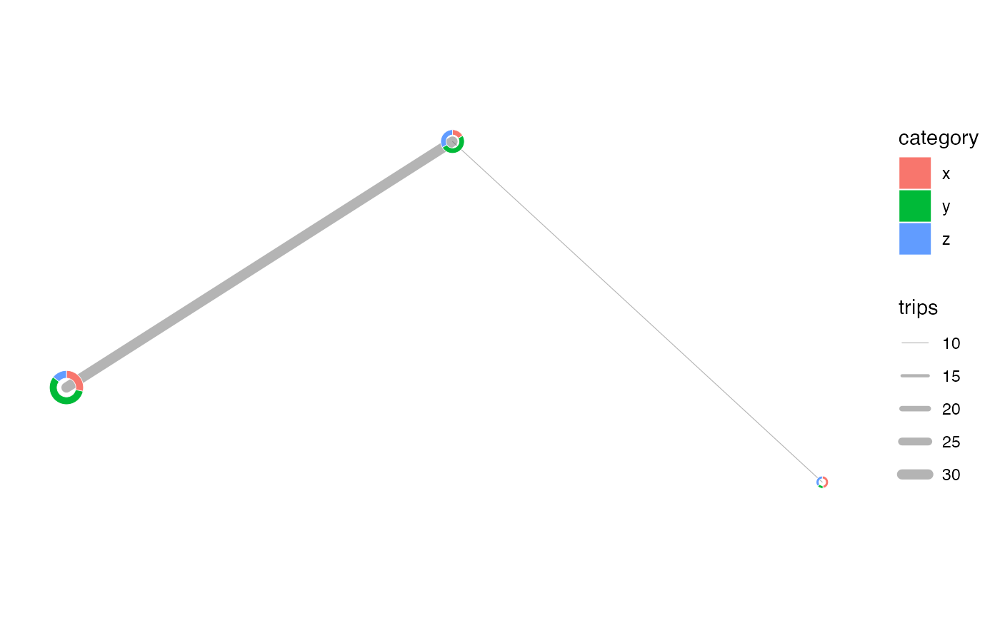

donut_map() returns a ggplot2 map with donut charts located on top of an
optional sf background map. It can also add origin-destination links or
curved trajectories between donut locations.
Usage
donut_map(
data,
id,
category,
value,
map = NULL,
lon = NULL,
lat = NULL,
input_crs = 4326,
crs = NULL,
radius_range = NULL,
inner_radius = 0.55,
n = 96,
colours = NULL,
flows = NULL,
from = NULL,
to = NULL,
flow_value = NULL,
flow_group = NULL,
flow_colours = NULL,
flow_min = NULL,
flow_linewidth_range = c(0.2, 2.5),
flow_curvature = 0.18,
flow_n = 30,
flow_arrow = TRUE,
flow_arrow_length = 0.12,
flow_colour = "grey35",
flow_alpha = 0.45,
map_fill = "grey96",
map_colour = "white",
donut_colour = "white",
donut_linewidth = 0.15
)Arguments
- data
A data frame or
sfobject. Each row is one category for one donut location.- id
Unquoted column identifying each donut location.
- category
Unquoted column identifying donut categories.
- value
Unquoted numeric column giving non-negative category values.
- map
Optional
sfobject used as a background layer.- lon, lat
Unquoted longitude and latitude columns. Required when
datais not ansfobject.- input_crs
Coordinate reference system for
lonandlat, or for ansfobject with missing CRS. Defaults to EPSG:4326.- crs
Target projected CRS used to build the map.
- radius_range
Numeric vector of length 2 giving minimum and maximum donut radii in map units. If
NULL, a range is derived from the map extent.- inner_radius
Numeric value in
(0, 1)giving the inner radius as a proportion of the outer radius.- n
Number of points used to approximate a complete outer circle.
- colours
Optional category colours. Use a named vector for stable category-colour matching.
- flows
Optional data frame of origin-destination flows.
- from, to
Unquoted columns in
flowsidentifying origin and destination ids. Required whenflowsis supplied.- flow_value
Optional unquoted numeric column in
flowsused to scale line widths. If omitted, each flow receives value 1.- flow_group
Optional unquoted column in
flowsused to colour flow lines and arrowheads by group.- flow_colours
Optional colours for
flow_group. Use a named vector for stable group-colour matching. If omitted and flow groups match donut categories,coloursis reused.- flow_min
Optional minimum flow value to draw.
- flow_linewidth_range
Numeric vector of length 2 controlling flow line widths.
- flow_curvature
Numeric curvature for trajectory lines. Use
0for straight lines, positive values for one bend direction, and negative values for the opposite direction.- flow_n
Number of points used to approximate each curved trajectory.
- flow_arrow
Should static flow trajectories include arrows?
- flow_arrow_length
Arrow length in inches when
flow_arrow = TRUE.- flow_colour, flow_alpha
Flow line colour and alpha.
flow_colouris used whenflow_groupis not supplied.- map_fill, map_colour
Background map fill and outline colours.
- donut_colour, donut_linewidth
Donut segment border colour and linewidth.
Examples
demo <- data.frame(
place = rep(c("A", "B", "C"), each = 3),
lon = rep(c(-71.35, -71.2, -71.05), each = 3),
lat = rep(c(46.75, 46.82, 46.73), each = 3),
category = rep(c("x", "y", "z"), times = 3),
value = c(10, 20, 5, 5, 15, 10, 12, 4, 9)
)
flows <- data.frame(
from = c("A", "B"),
to = c("B", "C"),
trips = c(30, 10)
)
donut_map(
demo,
place,
category,
value,
lon = lon,
lat = lat,
flows = flows,
from = from,
to = to,
flow_value = trips
)
